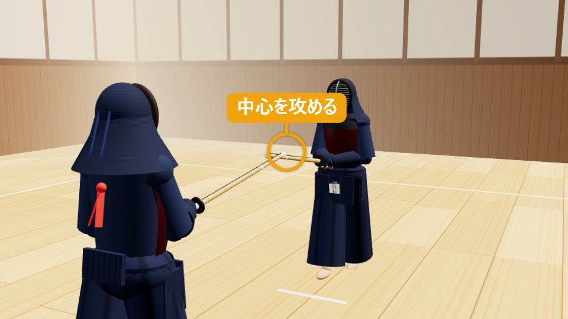
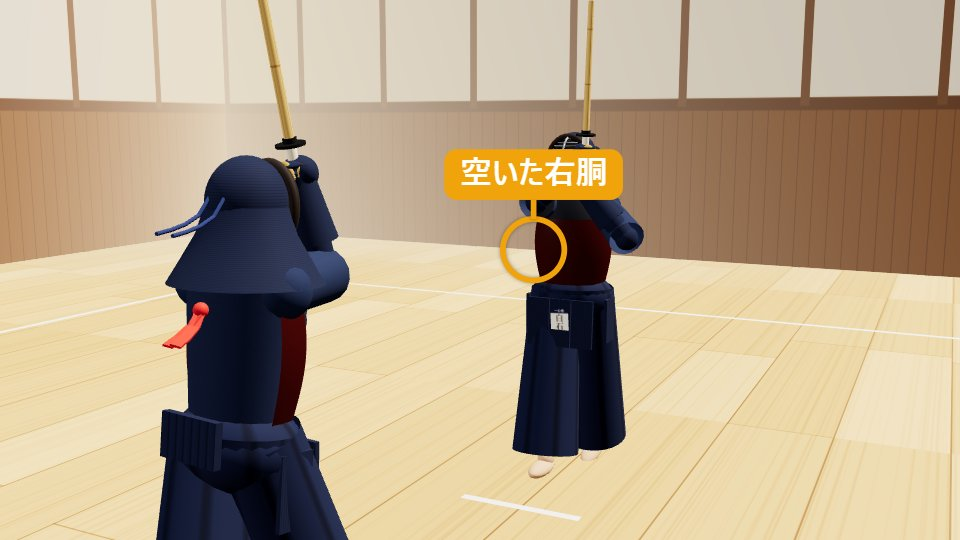
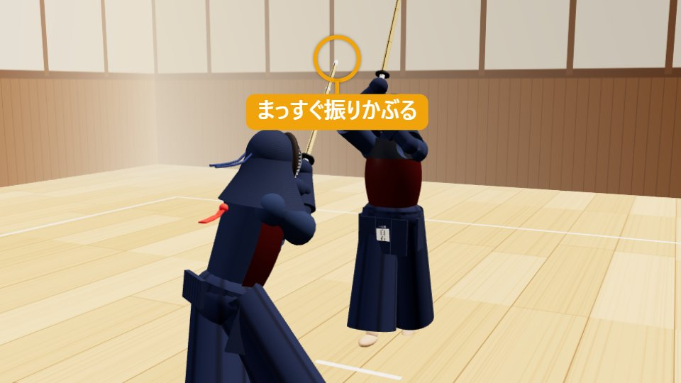
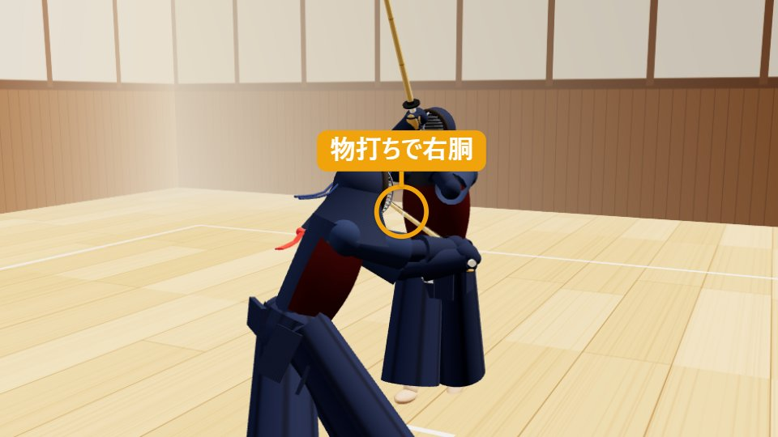
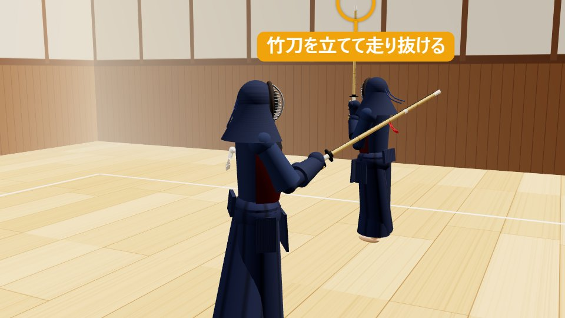

胴どう
刃筋を立てて、斜めに斬る。
1胴の打ち方（動作）
ドラッグで回転・ホイールで拡大縮小
1構え・攻め合い
一足一刀の間合い。剣先で中心を攻める。
有効打突チェック — 再生に合わせて点灯します
- 充実した気勢「ドウ」の発声
- 竹刀の打突部物打ちで打つ
- 打突部位右胴
- 刃筋正しく胴に刃筋が通る
- 適正な姿勢低く屈んでも崩れない
- 残心向き直って構える
分解して見る（5コマ）
-

STEP 1
構え・攻め合い
一足一刀の間合いで中段に構え、剣先で相手の中心を攻めます。胴を狙うときも、目線は相手全体に置きます。
-

STEP 2
竹刀を立てて、相手に面を打たせる
手は低いまま腕を伸ばし、剣先を立てて相手の竹刀を押さえます。相手が面を打とうと大きく振りかぶると、右胴が空きます。
-

STEP 3
振りかぶり、右足から踏み込む
両腕をまっすぐ頭の上へ上げて振りかぶりながら、右足を斜め右前（45度）へ踏み出します。上体を前へ曲げて屈みます。
-

STEP 4
打突「ドウ！」
背を伸ばしたまま上体を前へ屈め、相手の右肩のあたりから、手首を返して斜め下に斬り下ろし、物打ちで相手の右胴に当てます（剣先は手より上）。そのまま右へ振り抜きます。「ドウ」と発声します（気剣体の一致）。
-

STEP 5
抜けて残心
打ったら竹刀をそのまま右へ振り抜き、止まらずに右（相手の左側）へ走り抜けて、竹刀を立てます。左回りに向き直り、剣先を相手の中心につけた中段に構え直します。
2胴とは（概要）
胴（どう）は、相手の右胴（胴を守る防具の側面）を、刃筋を立てて斜めに打つ技です。面や小手と違い、竹刀を斜め方向に動かして打つため、刃筋の通し方が最大のポイントです。
胴は、相手の手元が上がって胴が空いた瞬間をとらえて打つ技です。面や小手で相手の手元を動かしてから打つ「二・三段の技」や、相手の技に応じてから打つ「応じ技」でも、胴は決め技としてよく使われます。
竹刀が胴に正しい角度で入らないと、「ぺたっ」と当たるだけで一本になりません。竹刀の刃の向きを意識し、打ったあとに竹刀を前へ抜くように、斬る感覚で打つことが大切です。
- 分類
- しかけ技・一本打ちの技
- 打突部位
- 右胴（相手が上段のときは左胴も）
- 機会
- 相手の手元が上がり、胴が空く瞬間
- 難易度
- ★☆☆（初級）
覚えておきたい言葉
3胴を打つときのコツ（技を出す側） 掛かり手
刃筋を通す
胴は斜めに打つため、竹刀の向きを意識しないとひらで当たります。打つとき、刃（弦の反対側）が胴の面に正しく向いているかを確かめながら稽古します。
左拳を中心から大きく外さない
斜めに打つために左手を流してしまうと、体が傾いて姿勢が崩れます。左拳は体の正面に近い位置を保ちます。
手元が上がった瞬間に打つ
相手が構えたまま動かないのに胴を打つと、竹刀で防がれたり、面を打たれたりします。胴が空いた機会を逃さないことが大切です。
腰から出て、体ごと打つ
手だけで打つと、竹刀が当たっても軽くなります。右足の踏み込みと打突、発声を同時にします。
打ったあとに竹刀を抜くように
押しつけず、物打ちで当たったら、竹刀を前へ進めながら抜くように使います。
抜けて、振り返る
打ったら止まらず、体をさばきながら抜けます。ぶつからないよう気をつけ、抜けた後に相手のほうへ向き直ります。
よくある失敗
- 竹刀の側面（ひら）が当たり、「ぺたっ」と音がして一本にならない
- 左手が流れて、体が傾く
- 機会が合わず、相手の竹刀や面に打たれる
- 打った後に止まる・相手に背を向けたままになる
4受ける側（元立ち）が気にすること 元立ち
胴の稽古での受ける側（元立ち）は、相手が正しい角度で打つための「胴が空く機会」を作る役です。
手元を上げて胴を空ける
中段から、面を打つ動きで手元を上げるなどして、胴が空く機会を作ります。機会は、わかりやすい大きさから、徐々に小さくします。
間合いを一定に保つ
一足一刀の間合いを保ちます。遠すぎると届かず、近すぎると胴が打てません。
構えを自然な高さに
胴の位置が低すぎたり高すぎたりすると、打つ側が狙いにくくなります。構えは自然な高さに保ちます。
打たれた後は体をさばく
打たれたら、相手が抜けられるよう、体を少しさばきます。正面に立つと衝突の危険があります。
打突の安全
胴で受けます。肘や腕を相手の竹刀の通り道に出さないよう気をつけます。
ひと言フィードバック
「今のはひらで当たった」「刃筋が通っている」など、受けた側にしか分からない感覚を伝えます。
受ける側の学び：手元を上げすぎると胴が空くことが体で分かり、自分が面を打つときの手元の高さや構えを見直すきっかけになります。
5胴が一本になる条件・ならない理由
有効打突は、充実した気勢、適正な姿勢をもって、竹刀の打突部で打突部位を刃筋正しく打突し、残心あるものとする。
剣道試合・審判規則 第12条（全日本剣道連盟）
竹刀が当たっただけでは一本になりません。胴の場合、6つの条件はそれぞれ次のように見られます。
| 条件 | ○ 一本になる胴 | × 一本にならない例 |
|---|---|---|
| 充実した気勢 | 「ドウ」の発声が、踏み込みと打突に一致している | 声が小さい・遅れて出す |
| 適正な姿勢 | 上体が傾かず、腰から前に出ている | 体が大きく傾く・腰が引ける |
| 竹刀の打突部 | 物打ちで打っている | 竹刀の根元や中ほどで当たる |
| 打突部位 | 相手の右胴（胴の側面）を打っている | 胴の上端・下端を外れる、肘に当たる |
| 刃筋正しく | 刃が胴の面に向かって斜めに入っている | 竹刀の側面（ひら）が当たる・押しつけるだけ |
| 残心 | 打った後に抜け、構え直している | 打った後に止まる・竹刀を下ろす |
審判の判定
- 審判は3人（主審1人・副審2人）。2人以上が旗を上げると一本になります。
- 胴は、竹刀が当たっても刃筋が通っていないと一本と認められにくくなります。打突音や、竹刀の角度も見られます。
- 相手の面と同時になった場合は、どちらが先に・より確かに決まったかで判断されます。
胴を一本にするコツ
「空いた胴」を打つ
手元が上がった瞬間や、面を打とうとした瞬間など、胴が空く機会が見えると、審判にも「機会をとらえた」と伝わります。
音と手応え
刃筋が通ると、乾いた打突音になります。ひらで当たると、鈍い音になります。
抜けて向き直るまでが一本
打ったあとに勢いよく抜けて、剣先を相手の中心に向ける動作まで、審判は見ています。
観戦のポイント：この3つが見えたら「一本」
- 相手の手元が上がった「機会」に打っている
- 竹刀が胴に斜めに入り、乾いた打突音が出ている
- 打った人が止まらず抜けて、剣先を相手に向け直している